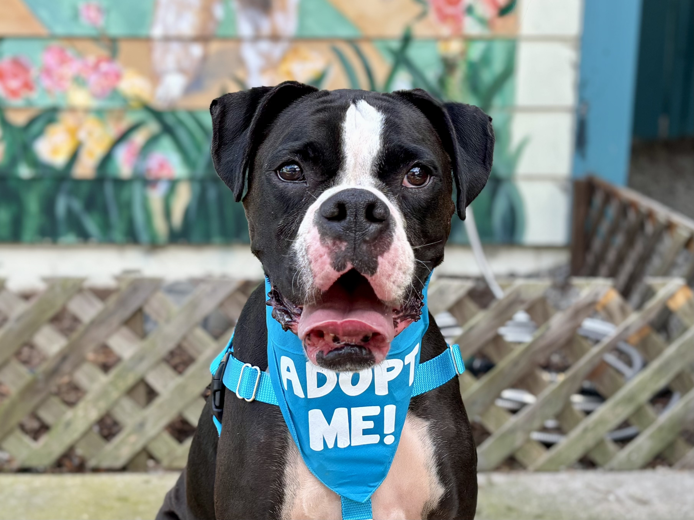
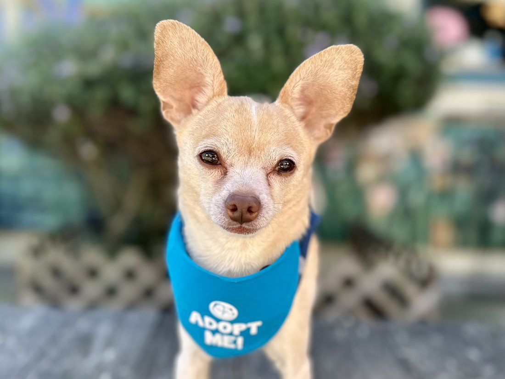
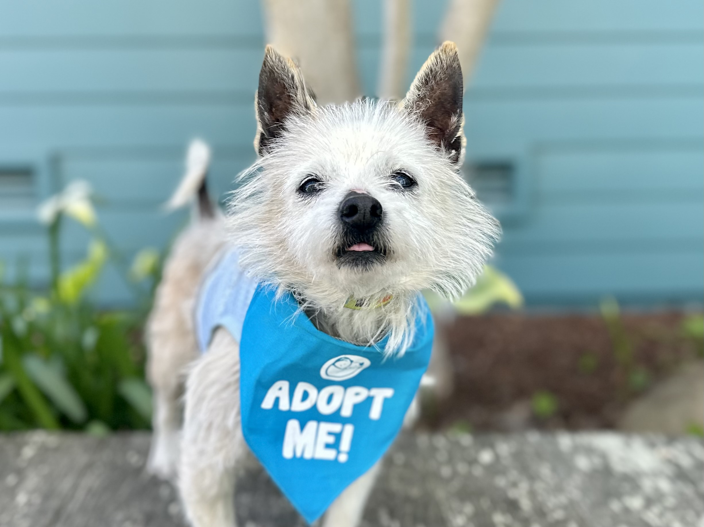
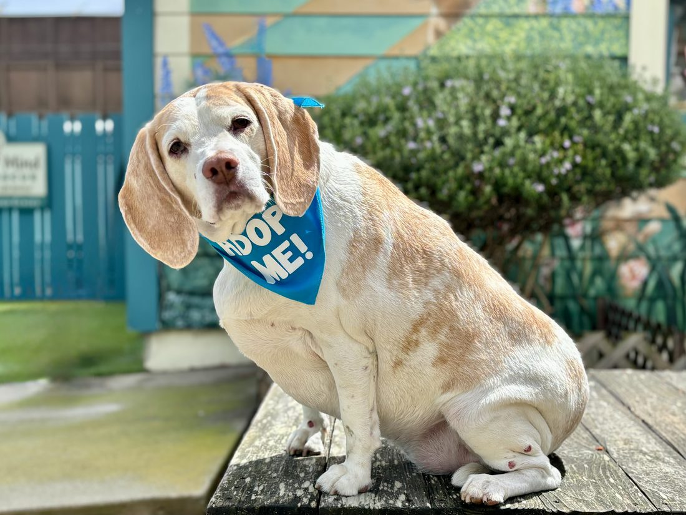

3,200+
Senior dogs rescued
Cooper came to us at ~13, surrendered when his family moved into memory care. Nine weeks later he was home in Carmel, on slow morning walks with his new person.

We help senior dogs and senior people on California's Central Coast. Through rescue, foster, adoption, hospice, and lifelong care, no dog is left without someone to love them.
We meet each dog where they are, find the right foster home, and match them with a person for the rest of their days.
When a guardian is struggling, we step in with dog walking, rides to the vet, financial help, and temporary foster care, so families can stay together.
Plan ahead with us, and we promise to love and care for your dog if you no longer can. It is a promise, not a program.
Each of these seniors has a full heart, a few grey hairs, and a story that is not finished yet.
Short films from the rescue: dogs settling into foster homes, volunteers on their morning walks, and the families who opened their doors.




Cooper came to us at ~13, surrendered when his family moved into memory care. Nine weeks later he was home in Carmel, on slow morning walks with his new person.

Every dog in our care stays as long as it takes. Some a week, some two years, a few forever in sanctuary. The promise never changes.
.jpeg)
On any given morning, a dozen volunteers walk dogs before their own day starts. Retired teachers, students, neighbors. They simply show up.

Every dollar goes to food, medical care, and foster reimbursement. Hazel came home in 2024 after two surgeries and a three-month stay. She is thriving.
Rosie walked into our home unsure, and two weeks later she was napping at my feet like she had always been here. Thank you for trusting us with her golden years.
They did not just match us with a dog. They matched us with a companion who understood quiet mornings.
POMDR stayed in touch long after adoption day. That is what a lifetime commitment looks like.